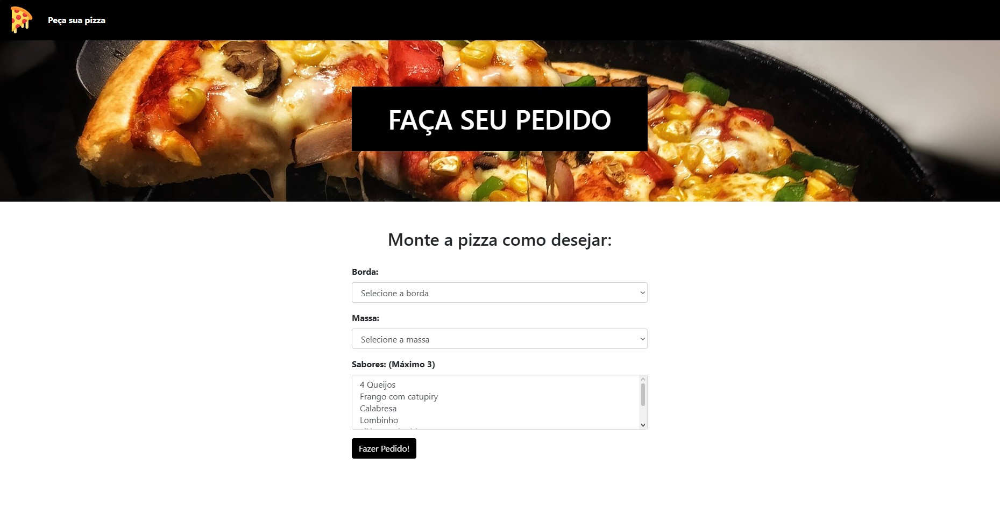
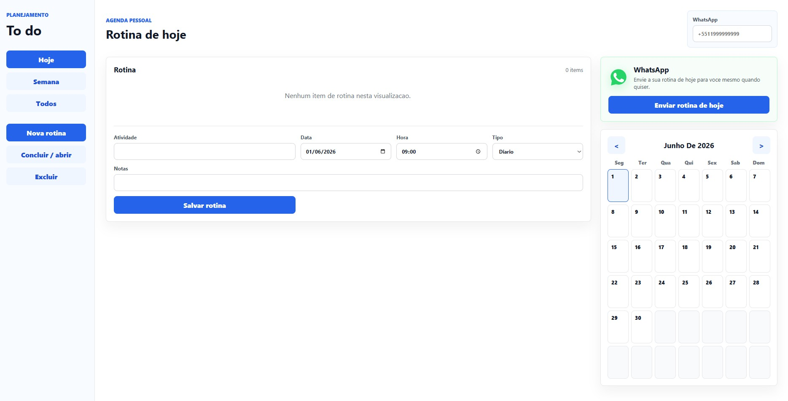
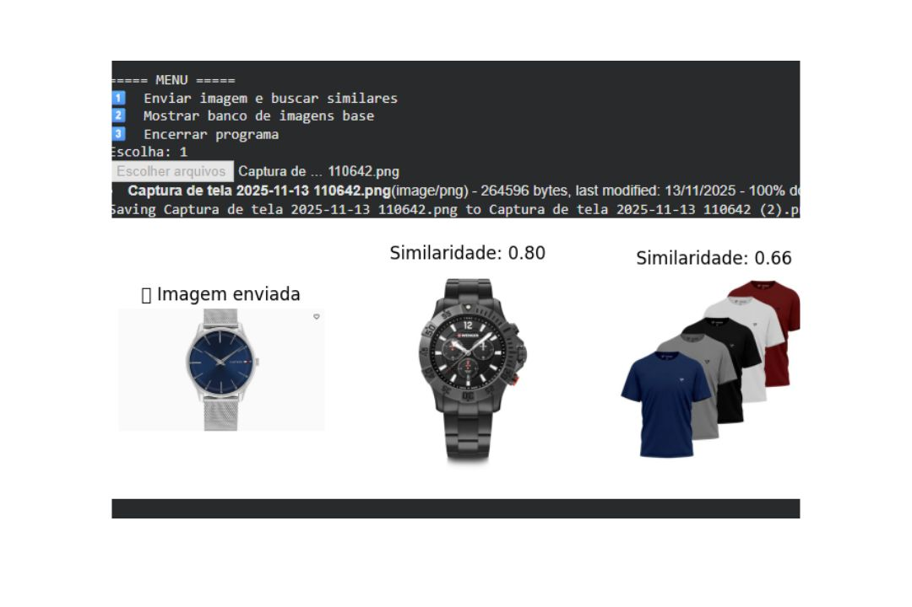
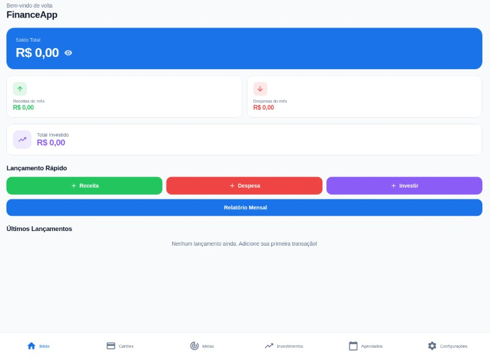
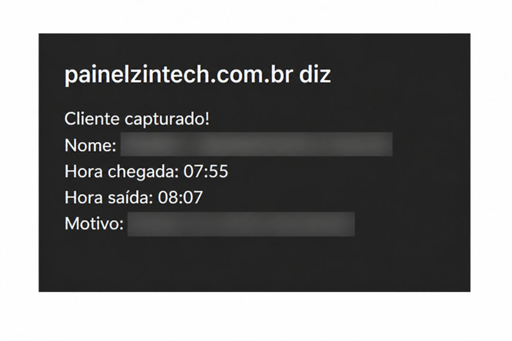

Python
Scripts, automações, análise de dados e lógica de aplicações.
Desenvolvedor de software
Construo soluções práticas com Python, Java, C++, machine learning e bancos de dados relacionais. Meu foco é transformar problemas reais em aplicações claras, úteis e bem organizadas.
Sobre mim
Sou Patrick, desenvolvedor interessado em criar sistemas que simplificam rotinas, organizam dados e entregam uma experiência agradável para quem usa. Gosto de unir lógica, automação e interfaces bem resolvidas para tirar ideias do papel.
Tenho base em Python, desenvolvimento web, Java, C++, machine learning e bancos relacionais, além de inglês avançado para estudar documentação, acompanhar conteúdos técnicos e colaborar em contextos internacionais.
Habilidades
Scripts, automações, análise de dados e lógica de aplicações.
Interfaces responsivas, páginas institucionais e aplicações para navegador.
Fluxos que reduzem tarefas repetitivas e tornam processos mais eficientes.
Fundamentos sólidos de programação, desempenho e estrutura de dados.
Modelos, classificação, recomendação e experimentos com dados.
SQL, modelagem, consultas e organização consistente de informações.
ChatBots para atendimento automatizado e interação com usuários.
Leitura técnica, comunicação profissional e aprendizado por documentação.
Projetos

Web
Site para delivery de pizzaria, com apresentação de produtos, vinculação a banco de dados local e processo de pedido simplificado.
Ver no GitHub
Produtividade
Aplicação para organizar hábitos, atividades e prioridades do dia a dia com uma experiência direta e amigável.
Ver no GitHub
Machine learning
Projeto de recomendação usando similaridade visual para aproximar imagens com características em comum.
Ver no GitHub
Dados
Aplicação para controle financeiro pessoal, com organização de dados e leitura clara de entradas e despesas.
Ver no GitHub
Automacao
Script Tampermonkey em JavaScript que captura dados de atendimentos em um sistema web e preenche automaticamente um formulario de ocorrencia em outro portal.
Ver no GitHubCertificados
Contato